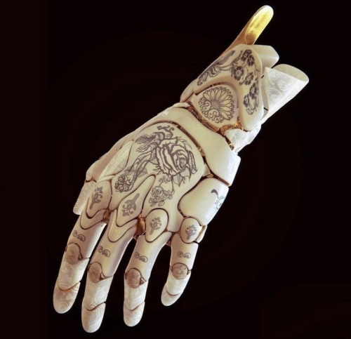
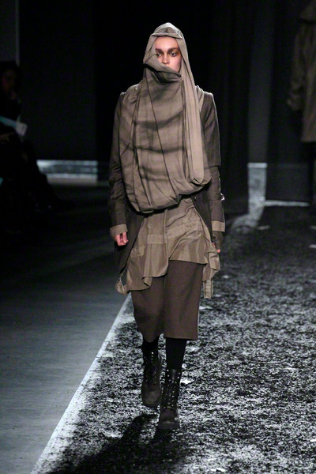
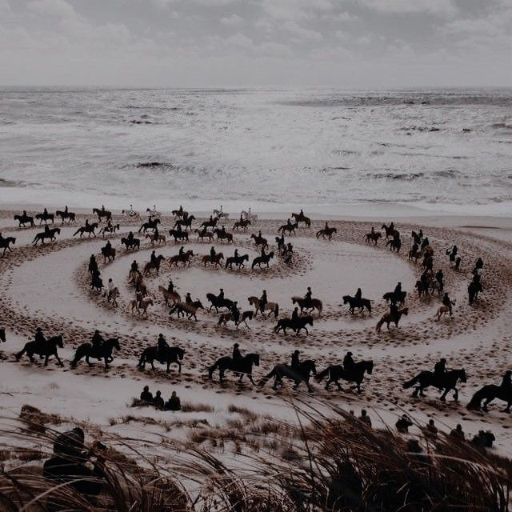

design
body
She has a modified body of an assassin, her final part of her limbs are mechanical, to give her better movement and ability, the syle of theese parts is really refined and particular, yet classic and elegant
clothes
Se wears practical clothes for the enviorement she lives in, her clothes need to cover all her body, in particular her modified parts, they are usually buggy to not show what is unerneathe
backstory and personality
backstory
Adya was raised by an organization who's goal was to control the assassination market by creating perfect assassins through a process of body modification and mind washing, this organization was destoyed when she already had done the training and the body modification but not the brainwashing, she survived to today by working as a scavenger in search of valuable things in ruins.
personality
Adya is a cold woman on the surface, but kind deep down, she is decisive and does not hesitate when she is required to do something, she struggles with empathy and common sense and with the guilt she has for her past. she loves jewellery and silence. she dislikes pets, loud people, parties or crowded places in general.
life
Adya lives with a small group of nomad mercants in the desertthat sell various things found in travels, she sells things that she finds in ruins. she works, lives and does everithing alone, since people are much less efficient and not trustable to her, plus she doesn't enjoy sharing time with others anyways. she always tries to be as quiet and lowkey as she can.
